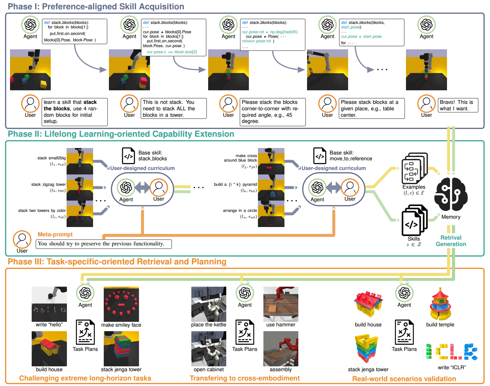
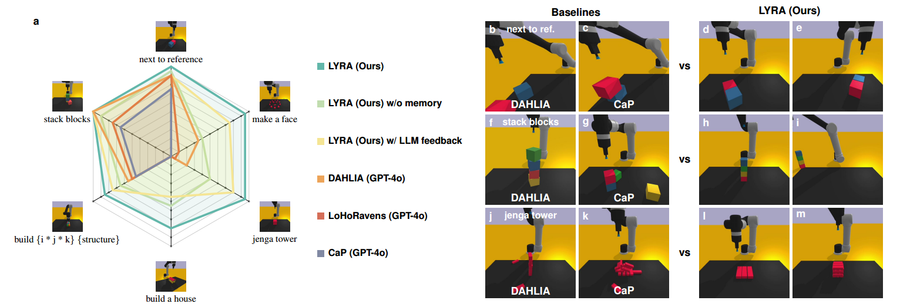
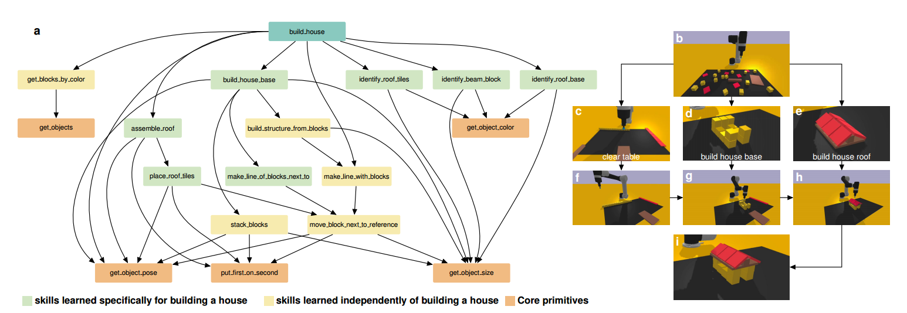
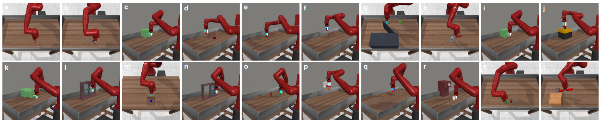
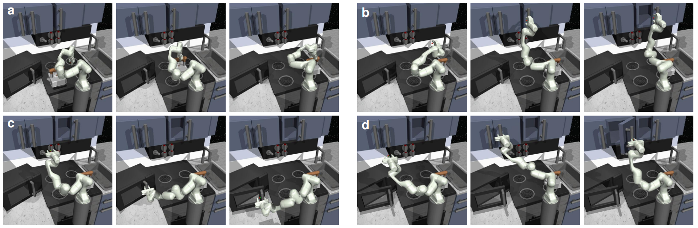

Large language models (LLMs)-based code generation for robotic manipulation has recently shown promise by directly translating human instructions into executable code, but existing approaches are limited by language ambiguity, noisy outputs, and limited context windows, which makes long-horizon tasks hard to solve. While closed-loop feedback has been explored, approaches that rely solely on LLM guidance frequently fail in extremely long-horizon scenarios due to LLMs' limited reasoning capability in the robotic domain, where such issues are often simple for humans to identify. Moreover, corrected knowledge is often stored in improper formats, restricting generalization and causing catastrophic forgetting, which highlights the need for learning reusable and extendable skills. To address these issues, we propose a human-in-the-loop lifelong skill learning and code generation framework that encodes feedback into reusable skills and extends their functionality over time. An external memory with Retrieval-Augmented Generation and a hint mechanism supports dynamic reuse, enabling robust performance on long-horizon tasks. Experiments on Ravens, Franka Kitchen, and MetaWorld, as well as real-world settings, show that our framework achieves a 0.93 success rate (up to 27% higher than baselines) and a 42% efficiency improvement in feedback rounds. It can robustly solve extremely long-horizon tasks such as ``build a house'', which requires planning over 20 primitives.
Our framework is built around a three-phase pipeline designed to help a robotic agent continually acquire, refine, and reuse skills through human-in-the-loop interaction. Together, these phases enable long-horizon manipulation that remains reliable, interpretable, and aligned with the user's preferences.
Phase I — Preference-Aligned Skill Acquisition. The first phase focuses on teaching the robot new skills through iterative interaction with the user. Instead of requiring the LLM to interpret complex tasks at once, the system gradually clarifies what skill to learn, how the environment should be initialized, and what behavior is expected. Users give natural-language descriptions, review generated function definitions, and observe real-time rollouts. Through repeated accept/reject and free-form feedback cycles, the agent converges toward a functional, preference-aligned skill that forms the basis for future learning.
Phase II — Lifelong Capability Extension. After a basic skill is acquired, the user can expand its functionality under a curriculum of increasingly challenging task variations. The agent must both preserve prior behavior and incorporate new capabilities without overwriting old ones. Skills can be extended with modular code or composed hierarchically. All refined skills and successful examples are stored in an external memory module, preventing forgetting and reducing hallucination during long-horizon reasoning. Over time, the agent grows a robust and reusable skill library.
Phase III — Task-Specific Retrieval and Planning. To solve long-horizon tasks, the agent retrieves the most relevant skills and examples from memory based on semantic similarity. This keeps the prompt compact while ensuring strong task relevance. Optional user-provided hints guide retrieval toward the correct behaviors. With these retrieved elements, the LLM composes multi-step task plans by calling previously learned skills, enabling the robot to robustly perform complex manipulation tasks that require more than 20 primitives.

Our success rate evaluation demonstrates that human-in-the-loop skill learning significantly improves long-horizon task performance. On the customized Ravens benchmark, open-loop CaP performs well only on tasks included in its prompt examples, but generalizes poorly to unseen structure-building tasks, achieving only a 0.45 success rate. Closed-loop baselines such as LoHoRavens and DAHLIA improve robustness through LLM feedback, yet they still encounter planning dead-ends in extremely long-horizon scenarios. Even our LYRA variant with LLM-only feedback—despite having access to all learned skills and examples—struggles to choose the correct behaviours, leading to a plateau at 0.77.
We further evaluate LYRA without external memory database, simulating approaches that extend demonstrations directly in the prompt. This variant represents the upper bound of prompt-based lifelong learning, yet its performance drops to 0.66 due to context-length limitations and interference from unrelated examples. In contrast, our full framework achieves a 0.93 average success rate—up to 27% higher than the variants—by combining structured skill inheritance with retrieval-augmented planning. These results highlight the importance of preference-aligned skill learning for scalable and reliable long-horizon manipulation.

To illustrate how lifelong user-guided learning enables complex long-horizon manipulation, we analyze the skill tree behind the “build a house” task. The final solution requires a hierarchy of 12 skills, developed bottom-up from core primitives and progressively expanded through user-designed tasks. These skills include both general-purpose behaviours inherited from earlier phases and new capabilities tailored to house construction, such as precise block alignment, corner-to-corner stacking, and structured assembly.
During execution, the high-level instruction is decomposed top-down into subtasks—organizing the scene, building the base, and constructing the roof—each supported by relevant learned skills retrieved from external memory. Unlike LLM-only closed-loop methods that generate flat code without understanding intermediate behaviours, our framework systematically accumulates reusable, modular skills that prevent catastrophic forgetting. This coordinated combination of bottom-up skill acquisition and top-down task planning produces a rich skill tree that scales to complex tasks and, to our knowledge, enables the first fully successful “build a house” solution.



Below we provide demonstrations for all ten LIBERO-long long-horizon manipulation tasks. Each video shows LYRA executing multi-step behaviors using learned skills and retrieved examples.
If you find this work useful, please cite:
@article{meng2025growing,
title={Growing with Your Embodied Agent: A Human-in-the-Loop Lifelong Code Generation Framework for Long-Horizon Manipulation Skills},
author={Meng, Yuan and Sun, Zhenguo and Fest, Max and Li, Xukun and Bing, Zhenshan and Knoll, Alois},
journal={arXiv preprint arXiv:2509.18597},
year={2025}
}